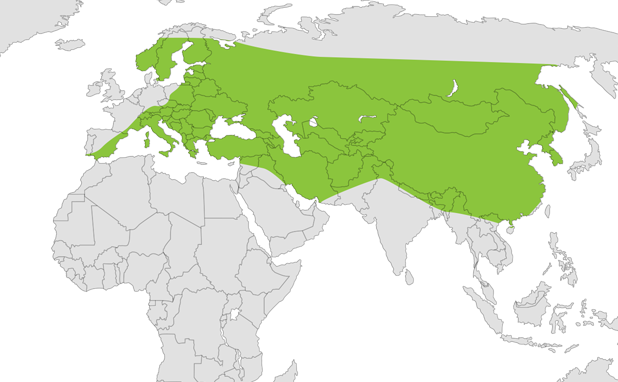
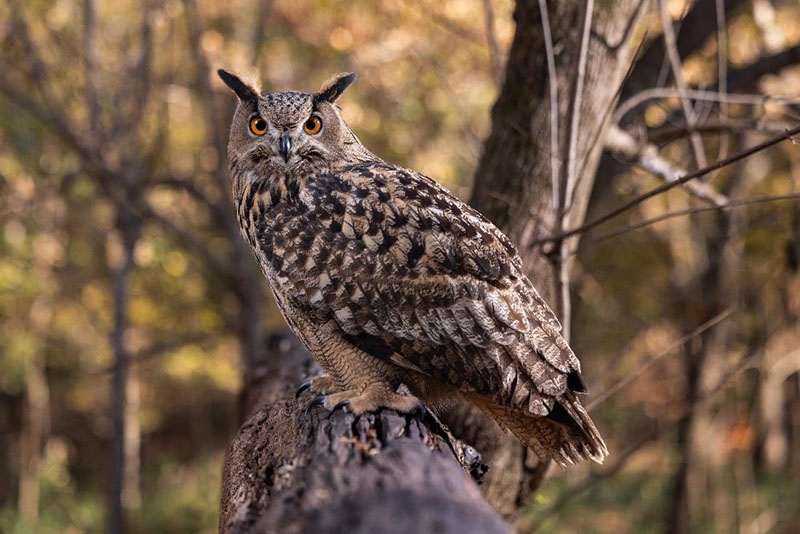

Eurasian Eagle Owl
Description
Eurasian Eagle Owls are 60-70cm with a wingspan of 1.6-1.8m and weigh around 15-30kg. They possess dark orange eyes and 'ear tufts'. They are brown with small black stripes near the edges of the feathers. Their eyes allow them to be nocturnal. Females are larger than males.
Habitat and Geography

The Eurasian Eagle Owl is considered as 'Least Concern' with the population suspected to be in decline, according to the IUCN Red List. The population is suspected to be in decline due to habitat loss in Europe, but it has not been confirmed. The taxonomy of this species is animalia, chordata, aves, strigiformes, strigidae, bubo. The species is spread throughout southern Europe, into Anatolia and the Middle East, in Siberia, and north-eastern Asia. It lives in forests, shrublands, grasslands, caves and subterranean tunnels, and terrestrial habitats.
Biology
Their talons, feet, and powerful wings allow them to hunt easily, and are thus, top of the food chain where they live. They consume rats, hares, mice, and other small mammals. The species hunts at night and are able to hear quite well.
Nests may be found in caves, caverns, ledges, and other such places. They may also use abandoned nests of large birds. While the female incubates the eggs, the male goes out to hunt for food. After the eggs hatch, the immature hatchlings are small with white down feathers, and dark beaks. They grow quickly and at around seven weeks, they are ready to practice flying, and by the third or fourth month, are able to leave the nest and form new territory. At two or three years of age, they reach sexual maturity.
Media
